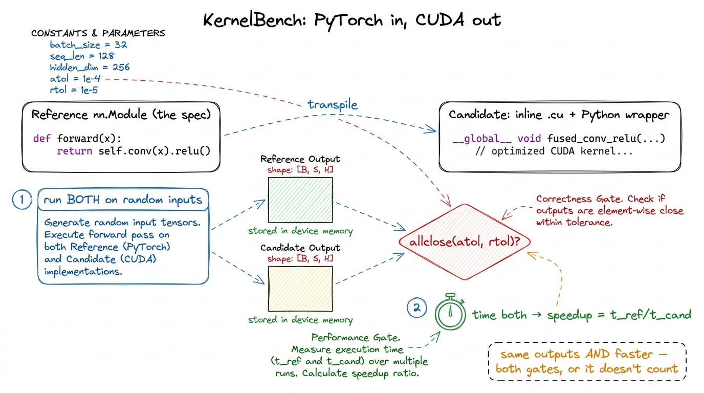
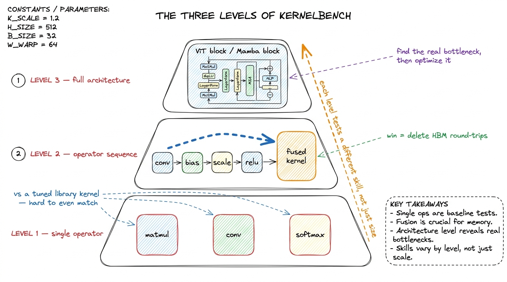
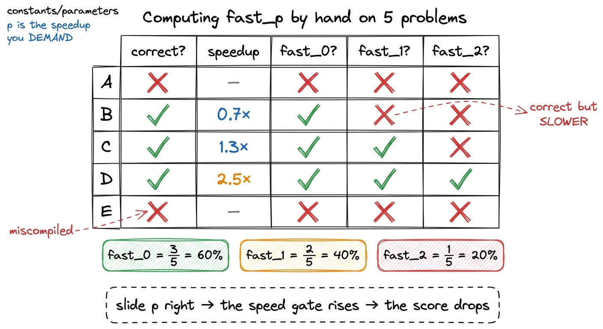

KernelBench & measuring AI kernels
Everything on this site so far has been a human closing the gap to cuBLAS by hand, one measured kernel at a time. The obvious next question is whether a language model can do the same thing — read a PyTorch layer, emit CUDA, and beat the framework it was handed. To ask that question seriously you need a benchmark that refuses to be gamed, and the cleanest one we have is KernelBench. This article is about what it measures, why its scoring metric is unusually honest, and why the number that came out of it — frontier models producing correct-and-faster kernels less than 20% of the time — is exactly the number you should have predicted.1 KernelBench is from Anne Ouyang, Simon Guo, and collaborators at Stanford (Hazy Research). The framing and the fast_p metric in this article follow their paper and Simon Guo's 2025 writeup on automated GPU kernel generation.
The task: PyTorch in, CUDA out
The setup is deliberately mundane, and that is its strength. Each problem hands the model a small PyTorch nn.Module — the reference. The model's job is to return a functionally identical module whose forward pass is implemented in inline CUDA (a .cu string compiled at load time) with a thin Python wrapper. Same inputs, same outputs, faster. This is transpilation: PyTorch is the specification language, CUDA is the target.
Using PyTorch as the spec quietly solves three problems that plague code-generation benchmarks. First, ambiguity — a natural-language prompt like "write a fast fused attention kernel" leaves a dozen decisions unstated (layout? precision? masking?); a PyTorch module leaves none. Second, correctness — you can run both modules on random inputs and compare outputs numerically, no hand-written test suite required. Third, the baseline — the reference PyTorch implementation is the thing to beat, and PyTorch is not a strawman; torch.compile and the underlying libraries are genuinely well engineered. Beating them is real work.

figure rendering · The KernelBench contract. The PyTorch module is simultaneously the speThree levels, three kinds of hard
The problems come in three tiers, and they are not just "small, medium, large." Each level tests a different skill.
Level 1 — single operators. One primitive: a matmul, a convolution, a layernorm, a softmax. Here the model competes head-to-head with a library kernel that NVIDIA or the PyTorch team has already tuned to death. There is almost no fusion to exploit and nowhere to hide; you win only by writing a genuinely good kernel for that one op. This is the level where our whole GEMM ladder lives — and note that even a strong hand-written SGEMM only reaches 93.7% of cuBLAS, so on Level 1 "faster than PyTorch" is a high bar the reference often already clears.2 This is why Level 1 is deceptively brutal for models. The reference isn't naive PyTorch python loops — it dispatches to cuBLAS/cuDNN. To be faster than the reference on a single matmul, a model has to out-engineer a library, not out-engineer a for-loop.
Level 2 — operator sequences. Now several ops in a row: conv → bias → scale → ReLU, or a small block of element-wise work wrapped around a matmul. Individually each op is memory-bound; run back to back in eager mode they round-trip through HBM between every step. The win here is fusion — collapse the sequence into one kernel so the intermediate tensors never leave the chip. This is precisely the memory-movement lever from the three regimes: the reference is bandwidth-bound, and a fused kernel wins by deleting the round-trips, not by doing less math.
Level 3 — full architectures. Complete model components: a Vision Transformer block, a Mamba block, a full attention layer. Dozens of ops, real data-dependent control flow, multiple bottlenecks in different regimes at once. Here the model can't just pattern-match one kernel; it has to discover where the time is actually going and optimize the part that matters — the same predict-then-measure discipline a human uses, but without a profiler in the loop.

figure rendering · The three levels climb from writing one good kernel, to fusion, to whofast_p: the metric that refuses to be fooled
Here is the sentence that makes KernelBench serious: a correct but slow kernel is useless, and a blazing-fast but wrong kernel is worse than useless. Most code benchmarks score only correctness — pass the unit tests, get the point. That is a single-objective bar, and single-objective bars get saturated. Kernel generation is inherently two objectives at once, and the metric has to enforce both.
The metric is fast_p: the fraction of problems for which the generated kernel is both correct and at least p× faster than the PyTorch baseline. Correctness is checked by fuzzing — run both modules on several random inputs and require the outputs to match within a numerical tolerance (an allclose with sensible atol/rtol, so bit-exactness is not demanded but real numerical divergence is caught).3 The tolerance matters more than it sounds. A kernel that reorders a reduction or uses TF32 will not be bit-identical to the FP32 reference, and that's fine — the tolerance is set to accept legitimate floating-point reordering while rejecting an actual bug. Set it too loose and you reward wrong kernels; too tight and you reject correct ones. It is a genuine design knob. Speed is measured by timing both forward passes and taking the ratio t_reference / t_candidate.
The p is a dial, and sliding it is the whole point:
- fast_0 is essentially just correctness — the kernel runs and matches, at any speed.
- fast_1 — the headline number — demands the kernel be correct and strictly faster than the baseline (a speedup
> 1×). This is the "did you actually beat PyTorch" gate. - fast_2 demands correct and more than twice as fast (a speedup
> 2×). Now you are asking for a real engineering win, not a coin-flip margin.
Reporting the whole fast_p curve, rather than one accuracy number, is what makes the benchmark hard to game. You cannot inflate your score by emitting kernels that are technically correct but slow (they fail every p ≥ 1), and you obviously cannot cheat with fast-but-wrong kernels (they fail correctness first). The two failure modes are orthogonal, so a system has to satisfy both to score at all.

figure rendering · fast_p as a two-gate filter. Only the correct-and-faster quadrant counThe number: under 20%
Now the result that motivated the whole line of work. Point frontier language models at KernelBench, ask for one kernel per problem, and score fast_1: across all three levels, the models produced kernels that were correct and faster than PyTorch eager less than 20% of the time. Four out of five attempts either miscompiled, produced wrong numbers, or produced right numbers slower than the framework they were trying to beat.
If you have internalized the earlier articles, that is not a surprising number — it is the expected one. Consider what has to go right for a single attempt to score on fast_1:
- The CUDA has to compile. Real kernels use
float4vectorization, shared-memory tiling,__syncthreads(), boundary guards — plenty of surface for a subtle syntax or type error that kills the whole attempt. - It has to be numerically correct on random inputs, which means the indexing arithmetic, the reduction order, and the boundary handling all have to be right, not just plausible.
- It has to be faster than a tuned baseline — and on Level 1 that baseline is
cuBLAS/cuDNN, which we've watched take a decade of hand-tuning to reach. Emitting text that clears that bar on the first try is a genuinely hard ask.
The models' specific weak spots are exactly where a human worklog spends its hardest days: hardware-specific intrinsics and tensor-core utilization. Getting a plain element-wise fusion faster than eager mode is achievable — it's a memory-movement win and the regime is forgiving. Getting a matmul to feed the tensor cores well enough to beat a library means orchestrating wgmma, shared-memory swizzling, and async copies with no margin for error, and that is precisely what the models mostly failed to do.4 The failure profile is telling: models did relatively better on Level 2 fusion, where the win is "delete a round-trip to HBM," and relatively worse where the win requires driving the tensor cores. Memory-movement optimizations are more learnable from text than the deep hardware-intrinsic ones — which is itself a useful hint about where human effort still has the biggest edge.
Why this benchmark is the right one
It would be easy to read "under 20%" as "models can't write kernels" and move on. That is the wrong lesson. The right lesson is that KernelBench measures the thing that actually matters and refuses to award partial credit for the wrong thing. A correctness-only benchmark would have reported a cheerful, misleading number; fast_p reports a low, honest one, because it insists on the same two-objective bar a real kernel engineer lives under every day — ship something correct, and ship something that is actually faster than what you already had.
That honesty is also what makes it a good target. A metric you can climb by cheating teaches a model to cheat; a metric that only moves when the kernel is genuinely correct-and-fast turns every gain into a real gain. The low starting score is not the story — the slope is. Once you have a bar this strict, the interesting question becomes what closes the gap: better sampling, a compiler-and-profiler feedback loop, letting the model measure instead of guess — the exact predict-then-measure loop this whole site is built on, handed to a model instead of a human. That is the next article, and the number to beat is the one we just wrote down: under 20% on fast_1.